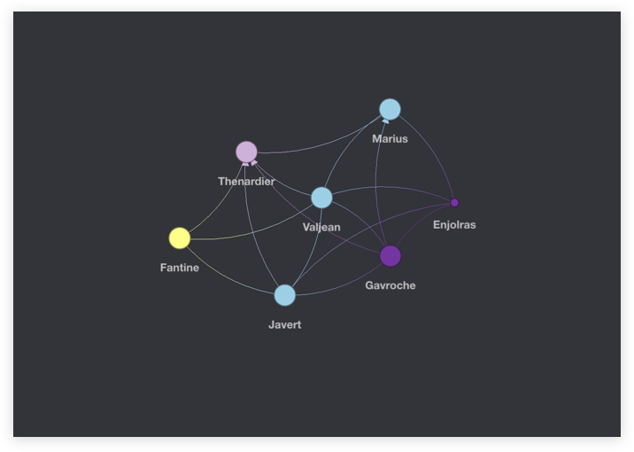
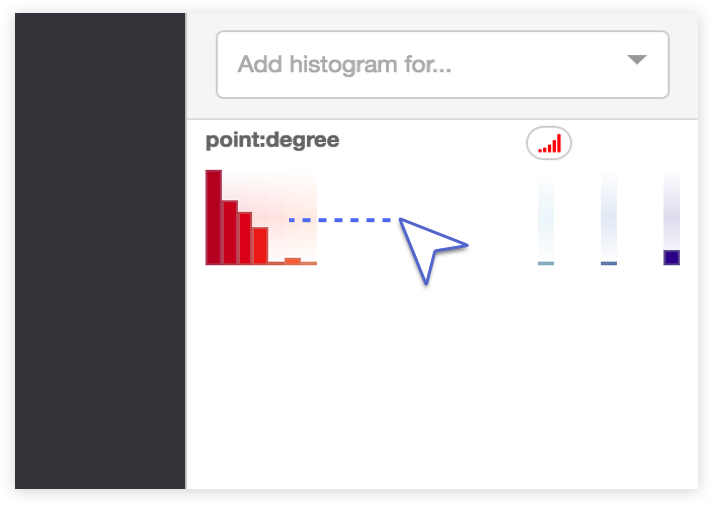
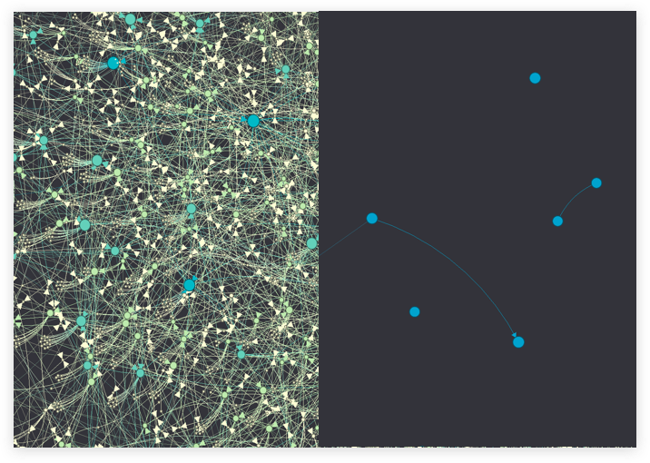

Let's take a look at the Graphistry UI...
The Graphistry user interface provides analyst powertools for working with massive graphs. Filter, cluster, drilldown, compare, color, and manipulate data on the fly, giving you a new way to explore your network data.
Toolbar Overview
The UI toolbar is home to a large suite of powertools for manipulating and exploring your graph. The toolbar is broken down into 5 major sections: Graph Tools directly manipulate the graph visualization's appearance and behavior, Selection Tools select/inspect and move graph elements, Query Tools quickly filter and exclude and show the current values, Inspection Tools open and close the various data inspection panels, and Workbook Tools take you fullscreen, open in a new tab, and save your current graph.

Graph Visualization (main panel)
Explore your graph data in the main visualization panel:
- Inspect & Move: Click a node to see its details, and click again and drag to move a single or group of nodes.
- Drill: When a label is click-opened, click on the various attributes to add filters or exclusions for them.
- Clean: At the bottom left of the panel, quickly toggle whether to show labels and icons, and prune isolated node (unconnected data points)

Histograms (right panel)
Analyze and manipulate all of your data columns:
- Chart & analyze: Create histogram summaries for any node or edge attribute
- Filter: Click-drag an attribute to only see the selected range of values
- Color: Paint the main graph visualization based on an attribute's values and a color palette of your choice to understand where the values occur
- Size: Control node size based on attribute values to understand what is important

Data Inspector
bottom panel
Explore your data with the underlying data tables.
- Classic: Search, sort, and navigate
- Visualize: Click any row to find it in the graph
- Inspect visual regions: Use the data brush tool to highlight regions of the graph and see the selection's values populated here!
Next Up: UI Deep Dives
Now let's dive into some UI walkthroughs of some of these important features, select a tutorial below to learn more.
Filters & Exclusions
Drilldowns & data cleaning

Histograms!
Advanced filtering and coloring

Tips & Tricks
Databrush & Prune Isolated Nodes

Looking for more information?
Download our in depth UI guide PDF to take you through all the details of the Graphistry tool suite.